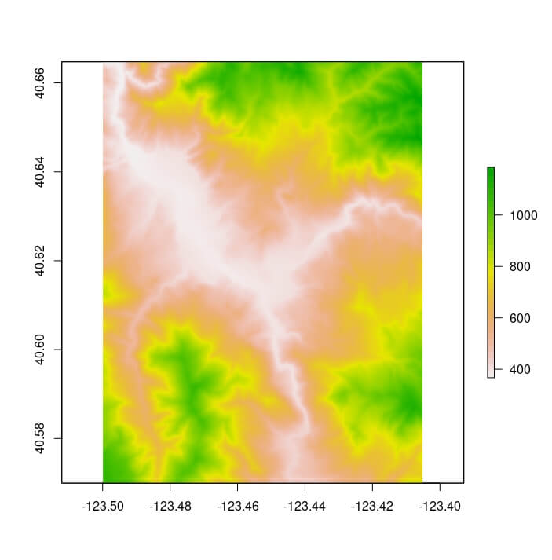
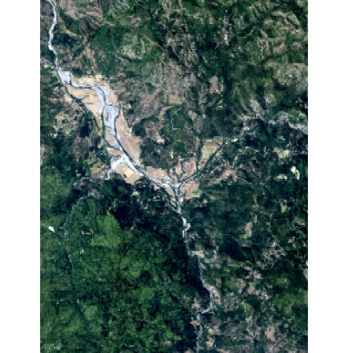
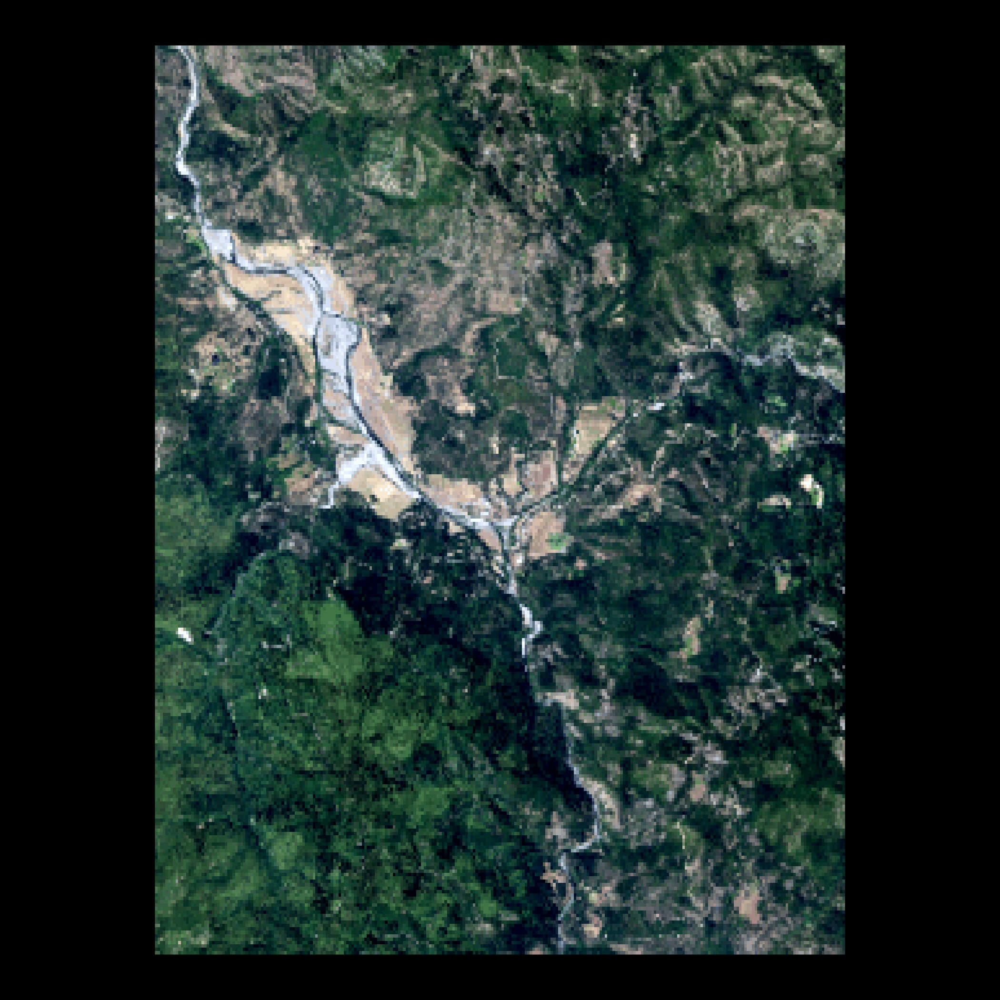
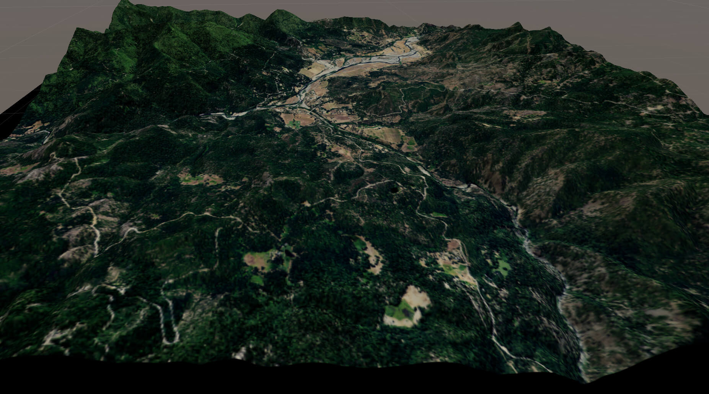

Overview
terrainr makes it easy to retrieve elevation and base map image tiles for areas of interest within the United States from the National Map family of APIs, and then process that data into larger, joined images or crop it into tiles that can be imported into the Unity 3D rendering engine.
There are three main utilities provided by terrainr. First, users are able to download data from the National Map via the get_tiles function, downloading data tiles for the area represented by an sf or Raster object:
library(terrainr)
library(sf)
location_of_interest <- tmaptools::geocode_OSM("Hyampom California")$coords
location_of_interest <- data.frame(
x = location_of_interest[["x"]],
y = location_of_interest[["y"]]
)
location_of_interest <- st_as_sf(
location_of_interest,
coords = c("x", "y"),
crs = 4326
)
location_of_interest <- set_bbox_side_length(location_of_interest, 8000)
output_tiles <- get_tiles(location_of_interest,
services = c("elevation", "ortho"),
resolution = 30 # pixel side length in meters
)Once downloaded, these images are in standard GeoTIFF or PNG formats and can be used as expected with other utilities:
raster::plot(raster::raster(output_tiles[["elevation"]][[1]]))
raster::plotRGB(raster::brick(output_tiles[["ortho"]][[1]]), scale = 1)
Finally, terrainr helps you visualize this data, both natively in R via the new geom_spatial_rgb geom:
library(ggplot2)
ggplot() +
geom_spatial_rgb(data = output_tiles[["ortho"]],
aes(x = x, y = y, r = red, g = green, b = blue)) +
coord_sf(crs = 4326) +
theme_void()
As well as with the Unity 3D rendering engine, allowing you to fly or walk through your downloaded data sets in 3D and VR:
with_progress( # When not specifying resolution, default is 1m pixels
output_tiles <- get_tiles(location_of_interest,
services = c("elevation", "ortho"))
)
merged_dem <- merge_rasters(output_tiles[["elevation"]],
tempfile(fileext = ".tif"))
merged_ortho <- merge_rasters(output_tiles[["ortho"]],
tempfile(fileext = ".tif"))
make_manifest(output_tiles$elevation,
output_tiles$ortho)We can then import these tiles to Unity (following the Import Vignette) to create:

The more time intensive processing steps can all be monitored via the progressr package, so you’ll be more confident that your computer is still churning along and not just stalled out. For more information, check out the introductory vignette and the guide to importing your data into Unity!
Citing terrainr
The United States Geological Survey provides guidelines for citing USGS data products (as downloaded from get_tiles) at https://www.usgs.gov/faqs/how-should-i-cite-datasets-and-services-national-map .
To cite terrainr in publications please use:
Mahoney, M. J., Beier, C. M., and Ackerman, A. C., (2022). terrainr: An R package for creating immersive virtual environments. Journal of Open Source Software, 7(69), 4060, https://doi.org/10.21105/joss.04060
A BibTeX entry for LaTeX users is:
@Article{,
year = {2022},
publisher = {The Open Journal},
volume = {7},
number = {69},
pages = {4060},
author = {Michael J. Mahoney and Colin M. Beier and Aidan C. Ackerman},
title = {{terrainr}: An R package for creating immersive virtual environments},
journal = {Journal of Open Source Software},
doi = {10.21105/joss.04060},
url = {https://doi.org/10.21105/joss.04060},
}Available Datasets
The following datasets can currently be downloaded using get_tiles or hit_national_map_api:
- 3DEPElevation: The USGS 3D Elevation Program (3DEP) Bare Earth DEM.
- USGSNAIPPlus: National Agriculture Imagery Program (NAIP) and high resolution orthoimagery (HRO).
- nhd: A comprehensive set of digital spatial data that encodes information about naturally occurring and constructed bodies of surface water (lakes, ponds, and reservoirs), paths through which water flows (canals, ditches, streams, and rivers), and related entities such as point features (springs, wells, stream gauges, and dams).
- govunits: Major civil areas for the Nation, including States or Territories, counties (or equivalents), Federal and Native American areas, congressional districts, minor civil divisions, incorporated places (such as cities and towns), and unincorporated places.
- contours: The USGS Elevation Contours service.
- geonames: Information about physical and cultural geographic features, geographic areas, and locational entities that are generally recognizable and locatable by name.
- NHDPlus_HR: A comprehensive set of digital spatial data comprising a nationally seamless network of stream reaches, elevation-based catchment areas, flow surfaces, and value-added attributes.
- structures: The name, function, location, and other core information and characteristics of selected manmade facilities.
- transportation: Roads, railroads, trails, airports, and other features associated with the transport of people or commerce.
- wbd: Hydrologic Unit (HU) polygon boundaries for the United States, Puerto Rico, and the U.S. Virgin Islands.
(All descriptions above taken from the National Map API descriptions.)
Note that sometimes these resources go offline, for reasons unrelated to anything in this package. You can see the current status of these resources at this link.
Installation
You can install terrainr from CRAN via:
install.packages("terrainr")Or, if you want the newest patches and features, you can install the development version of terrainr from GitHub with:
# install.packages("devtools")
devtools::install_github("ropensci/terrainr")Be aware that the development version is not stable, and features that haven’t been published on CRAN may change at any time!
Code of Conduct
Please note that this package is released with a Contributor Code of Conduct. By contributing to this project, you agree to abide by its terms.